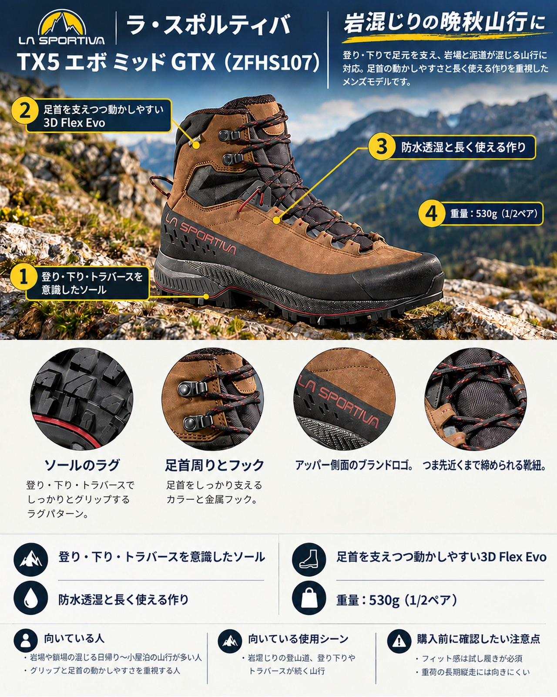

10月下旬、北アルプスの稜線はすでに初雪を迎え、紅葉は中腹から低山へと下りてきています。この時期は、朝の冷え込みで濡れた岩が滑りやすくなる一方、日中は樹林帯の土の道を長く歩くこともある季節です。
導入：どんな人・どんな山行に向くか
10月下旬、北アルプスの稜線はすでに初雪を迎え、紅葉は中腹から低山へと下りてきています。この時期は、朝の冷え込みで濡れた岩が滑りやすくなる一方、日中は樹林帯の土の道を長く歩くこともある季節です。
LA SPORTIVA（ラ・スポルティバ）の「TX5 エボ ミッド GTX」は、2018年に登場した「TX5」の後継モデルです。アプローチシューズ由来のレーシングシステムと Vibram® Megagrip™ のアウトソールを備えたミッドカットのハイキングブーツで、岩の混じる登山道を日帰り〜小屋泊で歩く、ある程度経験のある人に向いた1足です。
基本スペック
※カラーやサイズ展開は時期や販売店で異なる場合があります。購入前に公式サイトで確認してください。
| 項目 | 内容 |
|---|---|
| 商品名 | TX5 エボ ミッド GTX（TX5 Evo Mid GTX） |
| 品番 | ZFHS107 |
| 価格 | 40,700円（税込、公式サイト表示） |
| 重量 | 530g（1/2ペア） |
| アッパー | ヌバックレザー |
| ライニング | GORE-TEX ePE Extended Comfort |
| インソール | Ortholite® Hybrid™ Mountain Hiking 5MM |
| ミッドソール | CM EVA |
| アウトソール | Vibram® Megagrip™ |
| サイズ | EU40〜48 |
| アクティビティ | ハイキング（公式の分類） |
登り・下り・トラバースを意識したソール
アウトソールは Vibram® と共同開発した Impact Brake System® のラグパターンを採用し、公式サイトでは登り・下り・トラバースでのグリップ力を高めると説明しています。一部の紹介では、今回のモデルでラグパターンが見直され、泥や土が詰まりにくくなったとされています。濡れた落ち葉や泥の多い晩秋の樹林帯で、ソールの目詰まりが減るのはうれしい点です。
同じシリーズの旧モデル TX5 GTX でも、Megagrip のグリップは高く評価されています。使った人の声では、霜の降りた稜線でのトラクションが印象的だった、さまざまな路面と天候でよく効いたとされています。
足首を支えつつ動かしやすい 3D Flex Evo
足首まわりには 3D Flex Evo システムを採用しています。公式サイトでは、足首をホールドしながら前後左右の可動域を確保する構造と説明されています。岩の段差を越えるときや斜面を横切るときに、足首の動きを妨げにくい設計です。
防水透湿と長く使える作り
ライニングは GORE-TEX ePE Extended Comfort で、雨や雪を防ぎつつ蒸れを逃がします。さらに、認定職人によるリソールサービス（Resole Me）と Resole Platform™ に対応しており、アウトソールがすり減っても張り替えて履き続けられます。4万円台のブーツだからこそ、長く使える点は大きな魅力です。
デメリット・注意点
- フィット感は試し履きが必須：同じシリーズの旧モデル TX5 GTX では、フィット感の評価が分かれています。比較的タイトで、幅広の足には窮屈に感じる場合があるという声がある一方、ゆとりのあるフィットで、細いかかとでは少し緩く感じる場合があるという声もあります。新モデルでも、足に合うかは店頭で厚手の靴下を履いて確かめるのが確実です。
- 重荷の長期縦走には向きにくい：同じシリーズの旧モデルについて、技術的な地形には強い一方で、数日にわたる縦走に必要なクッション性は足りないという声があります。テント泊装備を背負って何日も歩く用途なら、より硬くクッション性の高いブーツも候補に入れたいところです。
- 積雪期の高山向けではない：公式の分類はハイキングです。初雪後の稜線を歩く場合も、本格的な雪山装備が必要な時期・ルートには別のブーツを選びましょう。
- 価格は高め：40,700円（税込）は、ハイキングブーツとしては高価格帯です。
向いている人・向いていない人
◎向いている人
- 岩場や鎖場の混じる日帰り〜小屋泊の山行が多い人
- グリップと足首の動かしやすさを重視する人
- リソールしながら1足を長く履きたい人
△向いていない人
- 重い荷物を背負って何日も縦走する人
- 試し履きをせずに通販で購入したい人
- 積雪期の山にも使えるブーツを探している人
まとめ
TX5 エボ ミッド GTX は、人気の TX5 をリソール対応、泥詰まりしにくいソール、3D Flex Evo で進化させたミッドカットのハイキングブーツです。濡れた岩や落ち葉の道が増える晩秋の山行で、足元の安心感を高めてくれます。一方で、フィット感の評価は分かれるため、購入前の試し履きは欠かせません。紅葉が下りてきたこれからの山行に向けて、次の1足の候補にしてみてはいかがでしょうか。
この記事で紹介した商品
価格・重量・在庫は各ブランド公式サイトの記載（確認日つき）にもとづきます。商品を押すと、購入先を選べます。
この記事にはアフィリエイト広告が含まれます。リンク先での購入により、当サイトが報酬を受け取る場合があります。山行の前には、最新の気象とルートの状況を必ずご確認ください。